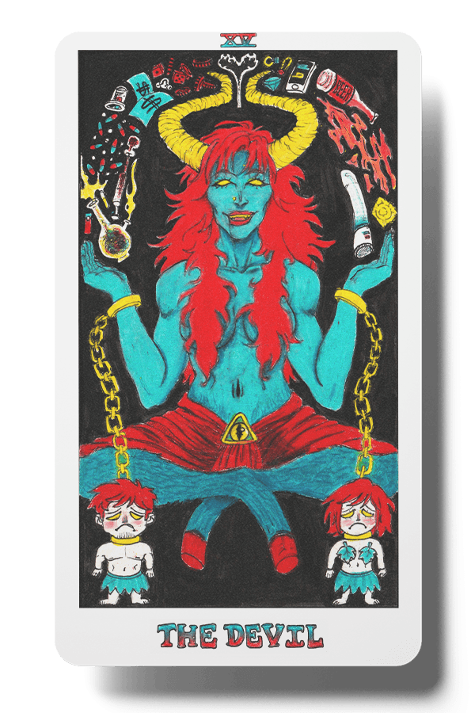
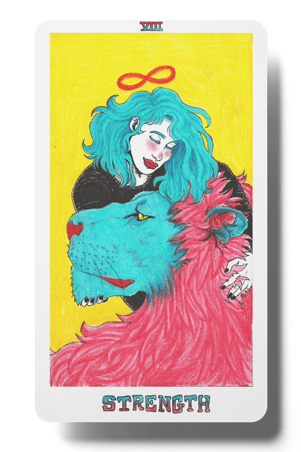
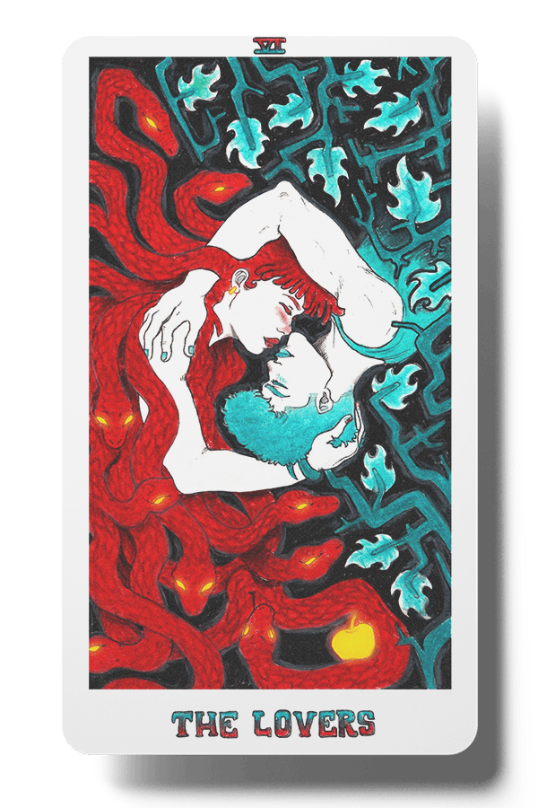
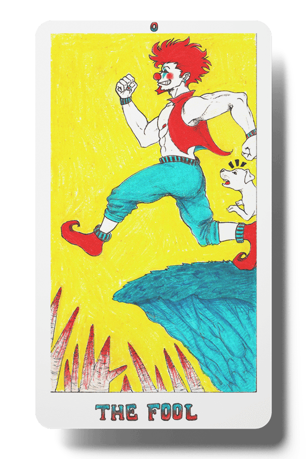
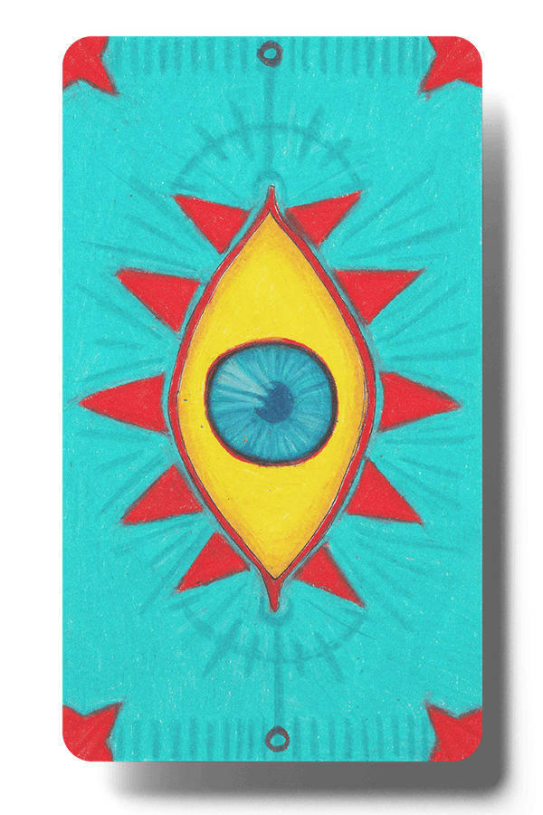

THE DEVIL
ORIGINAL MEANING
Upright Meaning: oppression, addiction, obsession, dependency, excess, powerlessness, limitations. This card represents feelings of emptiness, powerlessness, and entrapment which are a result of addiction to substances or material pleasures.
Reversed: independence, freedom, revelation, release, reclaiming power, reclaiming control. Reversed, this card means that a person realizes they are tired of repeating toxic cycles, and as a result, they break free of all of the chains that come with addiction and poor habits.
Visual Elements: Devil satyr, a man and a woman chained together by the devil.
MY INTERPRETATION
I decided to keep the original imagery of a devil and two chained figures but I added my own twist to it. The devil is now a seductive female demon with red lips and red hair. Her open palms are juggling several symbols of addiction. These include drugs (in the form of pills, cigarettes, a bong, and a syringe), alchohol (the spilled beer bottle), money (dollar bills, dice and chips for gambling, jewelry), social media (a phone), and sex (condom and a vibrator). I wanted to give a more literal depiction of the forms of addiction and material pleasures that people succumb to.

STRENGTH
ORIGINAL MEANING
Upright: inner strength, bravery, compassion, focus. This card represents inner strength and fortitude during moments of danger/distress and the ability to remain calm and strong even when your life is going through immense struggle.
Reversed: self doubt, weakness, insecurity. An upside down strength card can mean that a person is about to experience intense anger or fear in their life. This can mean that you have forgotten all about your passions and the kind of joy, happiness, and fulfillment that came with doing what you love.
Visual Elements: woman holding a lion's jaw, figure 8 symbol above her head, mountainside
MY INTERPRETATION
Other than leaving out the mountainous background, I stuck to the original interpretation of the card and focused on making the lion retain its sense of power and strength while also conveying the gentle control the girl has over the lion.

THE LOVERS
ORIGINAL MEANING
Upright: partnerships, duality, union. This card represents perfection, harmony, and mutual attraction found between lovers. The trust and the unity that the lovers have gives each of them confidence and strength, empowering the other.
Reversed: loss of balance, one-sidedness, disharmony. The Lovers reversed can point to both inner and outer conflicts that a person is dealing with. The disharmony can make daily life difficult and lead to added pressures within the relationship.
Visual Elements: an angel watching over the lovers, snake near woman is a reference to Eve
MY INTERPRETATION
I didn’t include the angel in my version of the card as I felt he would distract from the image. I chose to focus on the two lovers’ connection because it was enough for me to convey their strong union and love for each other. I made both the man and woman two different colors to symbolize how opposites attract and how their differences can cause disharmony within their union. For the Garden of Eden reference, I chose to represent that by making the woman’s hair a group of snakes, one wrapped around a golden apple.
THE FOOL
ORIGINAL MEANING
Upright: innocence, new beginnings, free spirit. The Fool card is numbered 0, which is considered to be a number of infinite potential. To see the Fool generally means the beginning of a new journey; one where a person will be filled with optimism and freedom from the usual constraints in life.
Reversed: recklessness, taken advantage of. In reverse, the card symbolizes that a person is acting like a fool by disregarding the repercussions of their actions. It can also represent a dangerous position a person may be in (but isn’t aware of).
MY INTERPRETATION
I depicted the fool as a clown and gave him red hair and a red clown nose. Just like the original card, the fool is about to walk off the cliff with no care in the world as a dog tries to warn him of the dangers that lie ahead. I heightened the “danger” aspect of the card by adding several bloody spikes below the cliff.


BACKSIDE
For the universal backside of the cards, I wanted to incorporate an eye into the design because of the symbolism behind it. Tarot readings are all about seeing what's in store for people's lives and an all-seeing eye fits that theme perfectly.